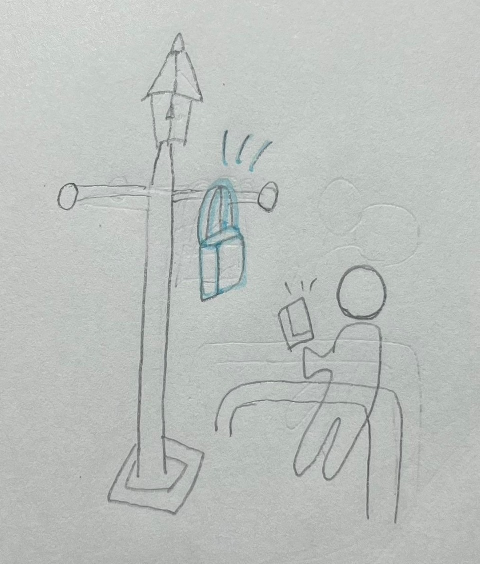
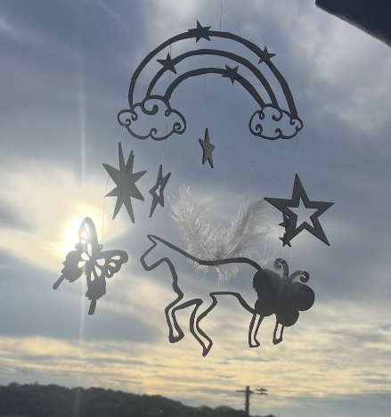
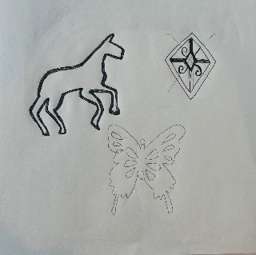
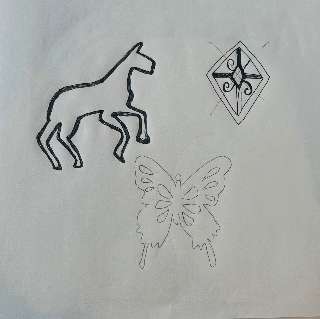
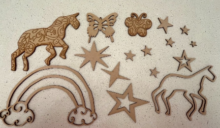

第4回
I'm Here!～自分をピン留め〜
...""
「ゆめかわ」をコンセプトに、空想の世界を作り上げた
－取り組むことにした問題－
★観察で見つけた人★
↑横浜駅のJR改札の前にある街灯にバックをかけている人がいた
「普通そんなとこにかける!？」と思い選んだ。
また、そのすぐ横にあるポールに座っていて、そこの空間を有効活用しているようでだった
ここにポイントオブビューを張る★私たち班は"なぜこのような行動を取ったのか"について3つ推測した★
①「荷物が重い」→どこかに置きたいと思っていた時に、荷物をかけられる電灯を見つけて掛けた
②「待ち合わせの目印」→待ち合わせの人にすぐわかってもらう目印とした
③「他の人と違う行動をして目立ちたい」→斬新な行動をして目立った
⇓
★解決策★
①荷物を軽く思わせるもの、重い荷物を楽に持てるもの、荷物がなくても出かけられる世の中
②位置情報を搭載、光を使って居場所を表す
③バックを派手にする（キラキラ、音、色、匂いなど）
↓私は②と③をテーマにモノを作成
－完成品の写真－
－構想段階のスケッチ・制作過程・使用機材－
 
